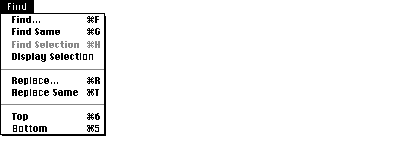

SYNTAX
AddMenu [-asis]
[[menuName | -help] [itemName [commandString]] DESCRIPTION The AddMenu command allows you to add custom menus and menu items to the MPW Shell. In building a menu, you associate a command, tool, or script with a menu item that is placed in a menu. When you choose the new menu item, the command, tool, or script associated with it is executed just as though you had entered and executed the commands in the active window. To further customize your menus, you can use the special metacharacters listed in Table 1 to define keyboard equivalents, character styles, and other menu item features. Be sure to place quotation marks around the names of menu items (itemName) containing these metacharacters (see the Examples for samples of their use). For more information about menus and metacharacters, see the information about adding menu items in the chapter "Menu Manager" in Inside Macintosh: Macintosh Toolbox Essentials. If you decide to change the commands associated with a menu item, you can execute AddMenu with the same menu name and item name but with a different string of commands. You can change the metacharacters associated with a menu item in the same manner, this time modifying the item name instead of the commands. Note that neither change affects the position of the item in the menu. You can also use AddMenu to display information about existing user-defined menus by omitting parameters. After you execute an AddMenu command line that has no parameters, AddMenu commands for the user-defined menus are written to standard output. The -help option of the AddMenu command lets you append commands to the Help menu instead of to a menu that you specify by name. The -link option allows you to add hierarchical submenus to your menu list. You must define the main menu name, the item from which the submenu descends, and the submenu name. Note that submenus are not automatically removed when you use DeleteMenu.
Note INPUT None OUTPUT None, unless you omit one or more AddMenu parameters. In this case AddMenu writes information about existing user-defined menus to standard output in the form of AddMenu commands. If you do not specify the commandString parameter, AddMenu lists the commands associated with the menu item to standard output. If you also omit the itemName parameter, AddMenu lists all user-defined menu items and their commands in the specified menu. If you do not specify any parameters, AddMenu lists all user-defined menus, menu items, and commands. STATUS
AddMenu can return the following status codes:
PARAMETERS menuName Specifies the menu name. You cannot append items to the Window, Mark, or Apple menus. itemName Specifies the menu item. You must place quotation marks around menu items containing any expansion characters or special metacharacters (see Table 1 for a list of metacharacters).
Note commandString Associates a list of commands with a menu item (itemName). Separate commands with semicolons and place quotation marks around the entire command string. Pay special attention to nested quotation marks around variables. A variable enclosed in double quotation marks (for example, "{Target}") expands to the value that is current at the time you execute the AddMenu command. A variable enclosed in single quotation marks (for example, '{Target}') expands to the value that is current at the time you select the menu item. The MPW Shell processes the string of commands twice--once when you execute the AddMenu command and again when the user selects the menu item. The first time commandString is processed, the MPW Shell strips the quotation marks from the string and "stores" the list of commands contained within the quotation marks with the associated menu item. When you select the menu item, the MPW Shell executes the list of commands as if you had entered them in the active window. This means that commandString must contain a list of syntactically correct commands. OPTIONS -asis Treats metacharacters (such as "/") as literals. See Table 1 for a list of metacharacters. -help Adds a menu item to the Help menu. -link mainMenuName itemName subMenuName Adds a hierarchical submenu. You must include three parameters with this option. mainMenuName specifies the menu to which you are adding a submenu. itemName specifies the item in the main menu from which the submenu descends. subMenuName specifies the name of the submenu (which is typically the same as itemName). Note that when you use DeleteMenu, submenus are not automatically deleted. The following command line creates the Info menu and appends the italicized menu item Files and Directories. This menu item lists the full pathname of each file and directory in the current directory. AddMenu Info 'Files and Directories<I' 'Files -f' In the following example, AddMenu creates an Extras menu with a TimeStamp item. Choosing the menu item or typing its keyboard equivalent, Command-2, writes the current time and date in the active window. AddMenu Extras "TimeStamp/2" 'Echo The date is: `Date`' Adding the following commands to your UserStartup•name file appends new menu items to the Find menu to create the menu shown in Figure 1.
AddMenu Find '(-' '' Figure 1: The Find menu with appended menu items  The first command line creates a new section at the bottom of the menu by inserting a disabled separator ('(-') as a menu item. The newly created Top and Bottom menu items appear below the separator and allow the user to position the insertion point at the top (•) and bottom (∞) of the target window. Their keyboard equivalents appear to the right of their names.
Note Notice the use of quotation marks in the previous example. The menu items (itemName) and command strings (commandString) are placed in single quotation marks so that the MPW Shell does not misinterpret the special characters used in the strings. These special characters include the metacharacters used to create the keyboard equivalents for the menu items. These quotation marks are stripped before the new menu items are added. The last two command lines also employ nested quotation marks in the commandString parameter. The {Target} variable is enclosed in double quotation marks so that it expands to the value of the target window when the menu item is chosen rather than when the AddMenu command is executed. In the following example, the -help option specifies that AddMenu is to add the menu item Custom Help to the Help menu. AddMenu -help "Custom Help" 'alert "Put your help alert here."' When you choose Custom Help from the Help menu, MPW displays the alert dialog box. LIMITATIONS Menus and menu items created with this command do not persist beyond the current MPW session unless you place the appropriate AddMenu commands in your UserStartup•name file. You cannot append menu items to the Window, Mark, or Apple menus. You cannot specify keyboard equivalents for items in the Help menu. AddMenu allows a maximum of 235 user-defined menus on systems running Mac OS 8.1 or earlier, and a maximum of 996 user-defined menus on systems running Mac OS 8.5 or later. SEE ALSO The Menu Manager chapter in Inside Macintosh: Macintosh Toolbox Essentials.
|